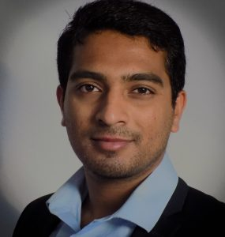

ABOUT ME
Hello! I am Robin Sebastian, I am a postdoctoral researcher at the Institute of Aerodynamics and Chair of Fluid Mechanics, RWTH Aachen University, Germany. I hold a Doctoral degree in Acoustics from the University of Poitiers, France. I also have a Bachelor's degree in Aerospace Engineering from National Aerospace University, Kharkiv, Ukraine and Master's degree in Turbulence from École centrale de Lille, ENSMA and ENSI Poitiers, France. I am very enthusiastic about simulation of complex fluid flow and analysis of large datasets. I host this website as a hobby and I will be sharing my knowledge and works in various fields, for instance, fluid mechanics, signal processing, parallel programming, and data analysis.